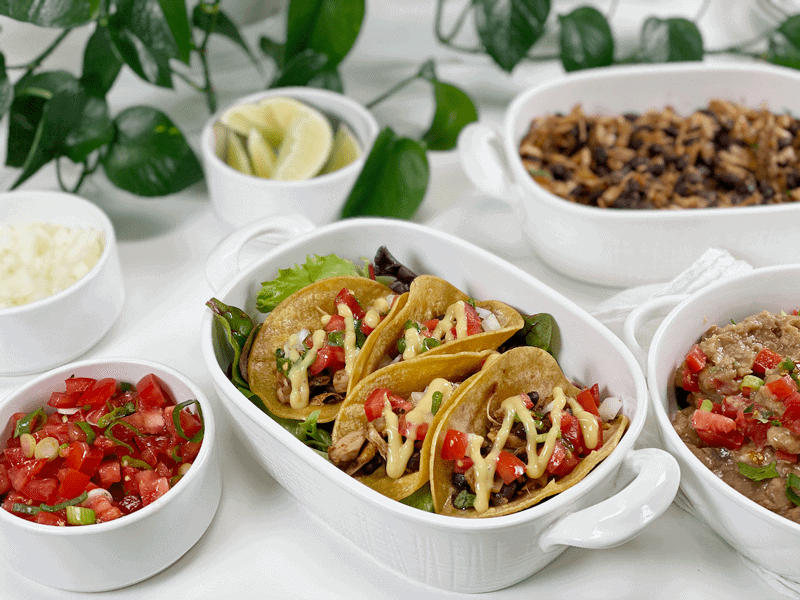
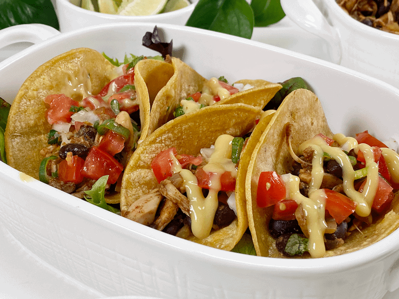
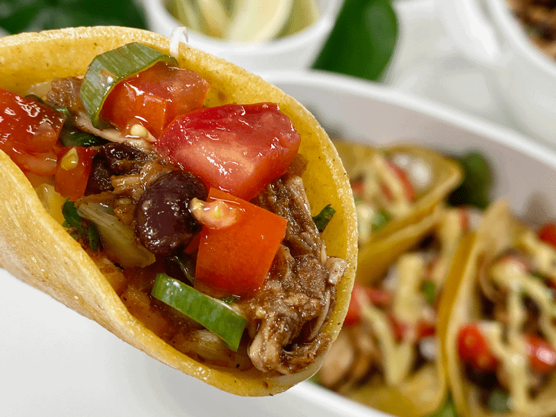
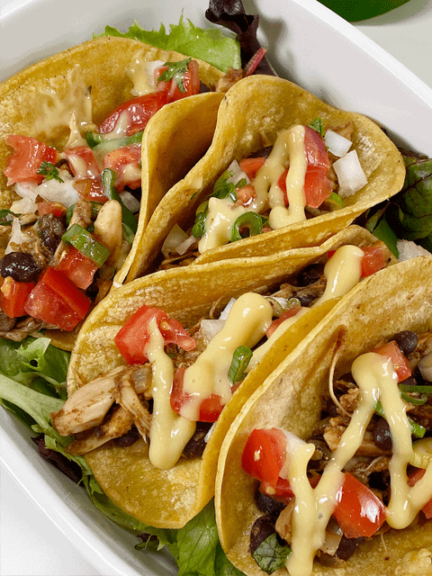
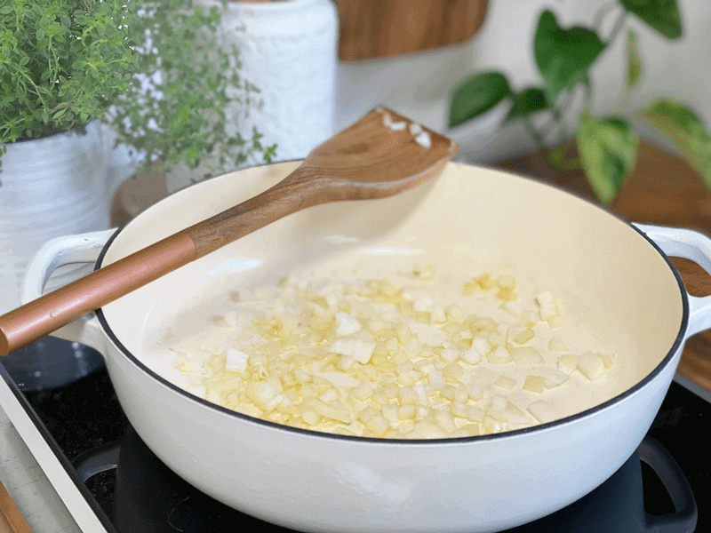
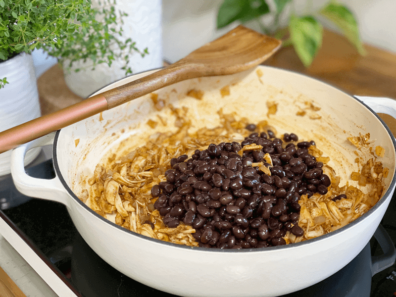
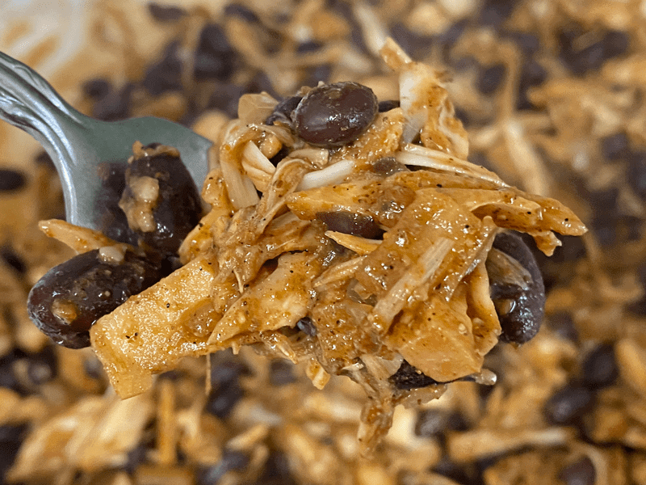
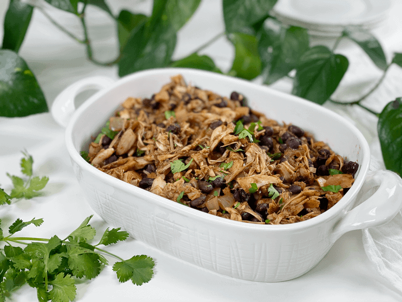

Jackfruit and Black Bean Tacos | Vegan | Oil-Free
Taco Tuesday! Did you know that Taco Tuesday is a custom in many US cities of going out to eat tacos–or in some cases, select Mexican dishes typically served in a tortilla–on Tuesday nights? Honey, I don’t care what day it is—Monday, Wednesday, Thursday, Friday, Saturday, or Sunday! Give me my tacos! The vegan tacos that I am about to share with you had me dancing the “Mexican Hat Dance” around my house for a good thirty minutes. I worked myself up quite the appetite!

What Does Jackfruit Taste Like?
Unlike fresh jackfruit, canned jackfruit is processed when it is unripe and still green. Therefore, it’s not sweet like the ripe fresh jackfruit that you might find in the produce department. It has a very mild flavor making it perfect for soaking up all the flavors it is cooked with. It kind of reminds me of the role tofu plays in recipes–it’s adaptable!

Ingredient Run-Down
Jackfruit “Meat”
- I use Native Forest Organic Young Jackfruit. The only added ingredients are water, sea salt, and lime juice.
- Make sure to strain the jackfruit and cut it into thin smaller pieces, cutting through the tougher core.
- One can of jackfruit runs close to $5 a can. To help the grocery budget, I added black beans to the “meat” filling instead of using two cans of jackfruit.
- Ripe jackfruit is a yellow fruit that is packaged as the whole fruit and does not work as a “meat” substitute. So it won’t work for these jackfruit tacos.
Onions
- Food prep tip–this recipe uses only 1/2 cup of diced onion. I recommend dicing up the whole onion, storing the excess in a glass container in your fridge. Throughout the week, it will save you time and onion tears.
Tortilla Options
- There are several options when it comes to your taco shell: corn tortillas, romaine lettuce leaves, thinly sliced jicama, coconut wraps, or create a taco salad, skipping the whole shell idea (that’s what I did). There are a lot of different wraps on the market, so use whatever tickles your tastebuds.
- If you wish to use corn tortillas and eat an oil-free diet, make sure to read the back of each package you look at. Not all are oil-free. Also, make sure to purchase organic, since most corn is genetically modified.
Taco Seasoning
- In today’s recipe, I used chili powder, cumin, smoked paprika, and sea salt for my taco seasoning. If your spice collection is sparse, you can use any premade taco seasoning packet that you may have in the pantry. But I highly recommend, for future Taco Nights, that you invest in some spices to make your own. Here is a good recipe for you – Taco Seasoning.
- Learn to become an ingredient detective when purchasing the next taco seasoning package. I flipped one packet over and it had the following ingredients; spice and coloring, dextrose, yellow corn, salt, onion, hydrolyzed vegetable protein (soy), cocoa processed with alkali, garlic powder, natural flavor caramel color, yeast extract, citric acid, maltodextrin, modified food starch, gum arabic, disodium inosinate.
- Want to geek out with me? Let’s dissect this taco seasoning. Sheesh!
- Dextrose: A simple sugar that is made from corn (unless it states organic, it is genetically modified).
- Yellow corn: Unless it states organic, it is genetically modified.
- Hydrolyzed vegetable protein (soy): Hydrolyzed vegetable protein (HVP) is produced by boiling foods such as soy, corn, or wheat in hydrochloric acid and then neutralizing the solution with sodium hydroxide. It is a food “enchanter” and is similar to MSG. My question is WHY does that even need to be added?
- Cocoa processed with alkali, AKA Dutching: This method is used to change the color of the chocolate and reduce the bitter flavor. However, several studies have demonstrated that Dutching significantly reduces the number of antioxidants in chocolate (1, 2). For this reason, chocolate that has been Dutched should be avoided.
- Natural flavor caramel color: Natural flavors are extracted from plants and animals for the purpose of creating flavor enhancers to be used in processed foods. Hmmm, if you are vegan, any foods you that have this ingredient could come from animals…something to think about.
- Yeast extract: This product is commonly known as monosodium glutamate (MSG). It’s added as a flavor enhancer.
- Maltodextrin: Maltodextrin is a white powder made from corn, rice, potato starch, or wheat. It is high on the glycemic index (GI), meaning that it can cause a spike in your blood sugar.
- Hang in there, I am almost done with this grueling task.
- Modified food starch: It is used as a texture-stabilizing agent, a thickener, or an anti-caking agent. It is made from a variety of foods, including corn, waxy maize, tapioca, potato, or wheat. Celiac? Gluten-Intolerant? Beware.
- Gum arabic: This is a type of plant-derived fiber. You can think of it as an edible “glue,” natural thickening agent, and binder that helps hold ingredients together.
- Disodium inosinate: Commonly added to fast foods as a food enhancer.

Tonight’s dinner had both Bob and me over the moon. Each component layered in its own pop of flavor. The rich Mexican spiced filling, the simple salsa, the refried beans, and the vegan cheese sauce (sweet potato-based) exploded in our mouths like a mariachi band. Just in case you need some music to play while making this dish, please click (here). I hope you enjoy this recipe. Love and blessings, amie sue

Ingredients
Taco Filling
Yields 3 cups
- 1 (15-oz) cans green jackfruit in water or brine
- 1/2 cup vegetable broth; divided in half
- 1/2 cup diced yellow onion
- 1 tsp minced garlic cloves
- 1 Tbsp coconut aminos
- 1 Tbsp lemon juice
- 2 tsp chili powder
- 1 tsp cumin
- 1 tsp smoked paprika
- 1/4 tsp sea salt
- 1 1/2 cups (15 oz can) cooked black beans
Simple Fresh Salsa
Yields 1 1/4 cup
- 1 cup diced tomatoes
- 1/4 cup diced green onion, stem included
- 1 Tbsp minced fresh cilantro
- 1/4 tsp sea salt
Shell & Topping Ideas
- Tortillas (see above)
- Avocado, salsa, hot sauce, lettuce, tomato, onion, lime wedges, black olives, cilantro, vegan cheese, and sour cream.
Preparation
Prepare the Jackfruit
- For optimal texture, drain the jackfruit, then cut into thin slices from core to the outer edge. Cutting it this way helps breaks up the tougher core and makes for the best-shredded texture. Set aside.
- Cook the core tips and the seeds; they are totally edible, and we don’t want to create food waste.
Assembly of Remaining Ingredients
- Place a medium-large skillet over medium-high heat. When the pan is hot, add 2 Tbsp of the vegetable broth along with the onions. Sauté until the onions have softened and begin to brown.
- You can use water in place of the broth if need be. The broth adds a depth of flavor.
- It’s normal to have to add more broth during the sautéeing process, but if the onions are sticking, that means your heat is too high.
- Add the minced garlic and cook for 1-2 minutes, making sure not to burn the garlic. Add more vegetable broth as needed to prevent sticking.
- Burnt garlic will impart a bitter taste to the dish, let’s avoid that. I don’t want you upset with me.
- Add the shredded jackfruit, 1/4 cup more broth, lemon juice, coconut aminos, all the spices, and drained black beans to the pot and cover. Reduce heat and let it simmer until the jackfruit softens slightly (roughly 5 minutes).
- If you find it a bit wet, just cook a little longer. If you find it a little dry, just add a bit more vegetable broth.
Simple Fresh Salsa
- Dice the tomatoes, placing them into a strainer (if really juicy). This will reduce the chances of a “watery” salsa. Add to a bowl along with the diced green onion, cilantro, and salt. Toss together.
-
-
Take note of the diagram I made on how to cut the jackfruit pieces.
-
-
Here it is, all ready to be cooked.
-

-
Saute the onions, then the garlic.
-
-
Mix in the spices…
-

-
Add in the beans and a few other ingredients (as indicated above)…
-

-
Here is a close-up of the finished product. Yum!
-

-
Served up and ready to be enjoyed.
-
© AmieSue.com